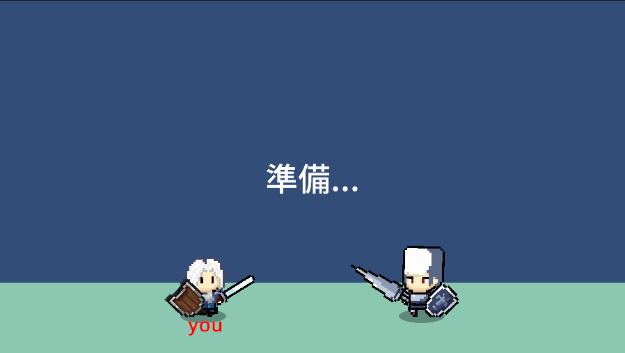

2025年4月20日
Speed Slash - 開発進捗報告

Speed Slashの開発が順調に進んでいます。現在はプレイヤーキャラクターの動きを調整中で、特に剣を振る動作の感触改善に取り組んでいます。
続きを読む
Speed Slashは、素早い反射神経と正確なタイミングが求められるアクションゲームです。プレイヤーは剣を持ち、画面上に現れる敵や障害物を素早く切り裂いていきます。
マウスをドラッグすることで剣を振ります。素早く正確に敵を切り裂くことでコンボやボーナススコアを獲得できます。
開発開始: 2025年3月
開発者: 髙橋荘悟、池本理柚
使用技術: JavaScript, HTML5 Canvas